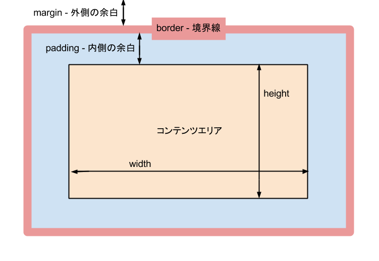

- 言葉: red, green, blue, …
- RGB(16進数): #000から#fffまで
- RGBA関数: rgba(0,0,0,0)
値の詳細についてはこちらなどを参考にしてみてください。
参考サイト
また、margin、border、paddingというプロパティを使用したボックスモデルについても位置の微調整に良く使われるので重要です。
それぞれを調整したい分だけ値を設定することで位置や大きさを変更できます 。
ピクセル(px), パーセント(%), 上下左右(top, bottom, left, right)等、設定の仕方も多様にあります 。
